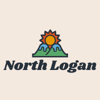

Site Purpose
The purpose of my Chamber of Commerce site is to promote the local economy and to let visitors find things to do when they visit. This site will also offer a place to join the chamber. Some other features might be a contact page. An event page and a business directory. These are relatively easy to incorporate without overblowing the scope.
Available Domain
I went to the google site to look for a domain and I have chosen: northlogan
Logo:
I made this logo on a free logomaking website called freelogodesign.com. It matches the local High Schools colors more accurately while using mountains a fixture of North Logan.